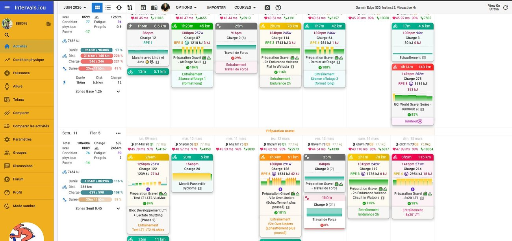
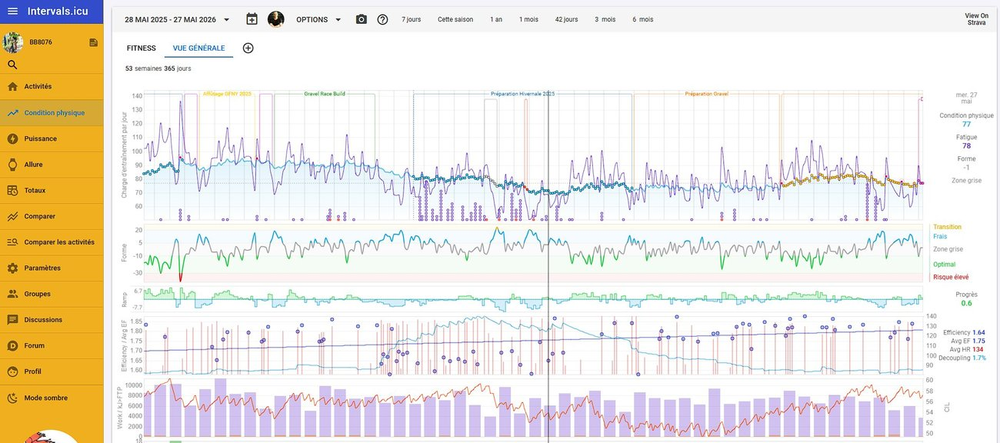
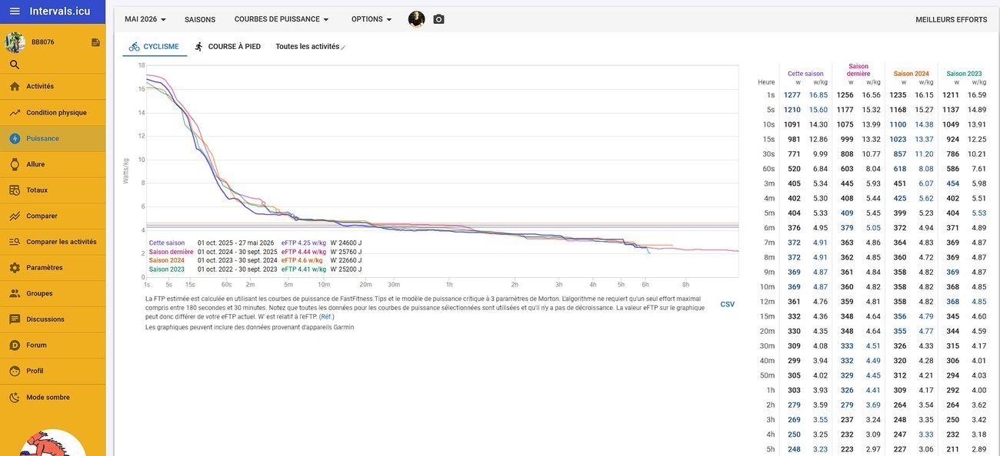

Prestations & Tarifs
Deux prestations complémentaires : un profilage lactatémique pour connaître tes seuils réels, et un accompagnement sur la durée pour transformer ces données en performance.
Mesure physiologique
Prestation ponctuelle · environ 2h sur place
Ce qui est inclus
Accompagnement
Suivi continu · sans engagement de durée
Ce qui est inclus
La méthode
La plupart des plans d'entraînement reposent sur un pourcentage de FTP — une estimation unique, souvent tirée d'un seul test de 20 minutes. La puissance critique va plus loin : en mesurant ta puissance sur une gamme complète de durées, du sprint au record de l'heure, on reconstruit ta courbe puissance-durée et on en extrait deux paramètres qui décrivent vraiment ta physiologie — ta puissance critique (CP) et ta capacité de travail anaérobie (W′). Cette analyse est incluse dans le coaching, sans supplément.
La plus haute intensité que tu peux tenir en régime métabolique stable. En dessous, l'effort reste soutenable longtemps ; au-dessus, la fatigue devient inéluctable. C'est ta vraie limite — pas une moyenne arbitraire.
La quantité de travail que tu peux produire au-dessus de ta CP : ton réservoir pour les attaques, les bosses et les sprints. Une fois vidé, il faut repasser sous la CP pour le recharger.
En reliant tes puissances maximales sur chaque durée, on obtient une courbe qui n'appartient qu'à toi. Sa forme révèle ton profil : plutôt explosif (gros W′) ou plutôt diesel (CP élevée).
Ta courbe puissance-durée
Puissance maximale soutenable selon la durée de l'effort — du sprint (5″) au record de l'heure (60′)
Tes zones d'endurance, de seuil et de VO2max sont définies par rapport à TA CP, pas à un %FTP générique. Chaque intensité tombe au bon endroit.
Pour le travail au-dessus de la CP, on dimensionne la durée et la récupération des intervalles à partir de ton W′ — assez dur pour progresser, jamais au point de saboter la séance.
Endurance franchement sous la CP, seuil calé juste autour, VO2max au-dessus avec un W′ maîtrisé : chaque séance vise une cible métabolique claire.
Quand ta CP monte ou que ta courbe se redresse, on le voit. L'entraînement s'ajuste sur des données concrètes, pas sur des sensations.
La plateforme
Le coaching s'appuie sur intervals.icu, une plateforme d'analyse de référence pour les sportifs d'endurance. Tu y retrouves au même endroit ta planification, le suivi de ta charge et l'évolution de ton profil de puissance — pour un accompagnement transparent et fondé sur des données, accessible à tout moment depuis ton ordinateur ou ton téléphone.
Chaque semaine, ton plan d'entraînement est construit et ajusté directement sur intervals.icu. Séances détaillées, objectifs hebdomadaires et structure jour par jour — tu sais exactement ce que tu fais et pourquoi.

Ta charge d'entraînement, ta fatigue et ta forme sont suivies en continu. On dose les semaines de travail et de récupération pour progresser sans tomber dans le surentraînement — un équilibre essentiel pour durer.

Ta courbe puissance-durée est analysée sur toute la gamme de durées (de 1 seconde à plusieurs heures) et comparée saison après saison. C'est là qu'on lit ta puissance critique, ton W′ — et qu'on mesure objectivement ta progression.

Comment ça se passe
On échange sur ton niveau, tes objectifs et ton contexte. Appel découverte gratuit de 20 min — sans engagement. 📞 07 86 06 95 01
Environ 2h sur ton vélo. On mesure ton seuil lactique 1 (LT1) et ton seuil lactique 2 (LT2 ~FTP), ta VLaMax et ta capacité à recycler les lactates de manière active.
Je t'explique tes données, ton profil métabolique et tes zones d'entraînement précises.
Avec le coaching, on transforme ces données en un plan concret, ajusté à ta vie.
Que tu veuilles juste un test ponctuel ou un accompagnement complet, on part toujours de la même base : des données réelles, pas des estimations.
📞 07 86 06 95 01 Envoyer un message